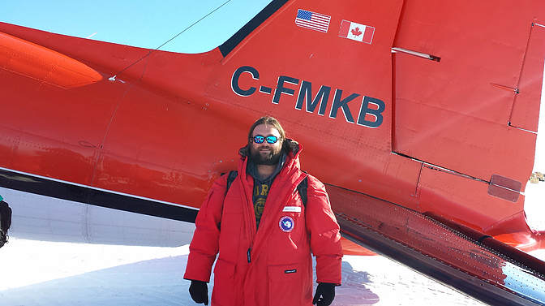

My Travel
I love to travel, and I have been very fortunate to have some interesting
trips! I have been to Europe several times and visited many countries
including Switzerland, Germany, France, Spain, Italy, The Netherlands, and
England. I have also been to Israel, Guatemala, and I was also able to
visit Rio de Jainero for a conference a couple years ago.

The most interesting trip I have been able to make was to the South Pole
for some calibration work on the IceCube Neutrino Observatory. I have
posted links to some of my travel albums below.
Links
- South Pole Trip Pictures
- Italy ISCRA 2014
- Geneva/CERN Trip 2015
- Munich 2013 IceCube Meeting
- Brazil 2013 ICRC